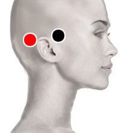

Gripe Aviaria
Par
preauricular - temporo-occipital

Generalidades:
La gripe aviaria o gripe aviar forma parte del género influenzavirus A. Las aves acuáticas como patos salvajes son el principal reservorio de este virus, siendo bastante resistentes al mismo, mientras que las aves de corral resultan más vulnerables. Algunas cepas del virus pueden llegar a transmitirse a varias especies de mamíferos como cerdos, gatos o incluso el humano.
En humanos afecta a vías respiratorias causando síntomas como fiebre, tos, garganta reseca, mialgia. Si se complica puede causar neumonía o incluso la muerte. El primer brote en humanos registrado en Hong Kong en 1997 alertó a las autoridades procediendo a sacrificar 1.5 millones de aves.
El Dr. Goiz menciona al Newcastle virus como responsable de la misma enfermedad, aunque en este caso con síntomas neurológicos.
Transmisión
Por estar cerca de aves infectadas, por comer pollo contaminado (frito sin cocer)